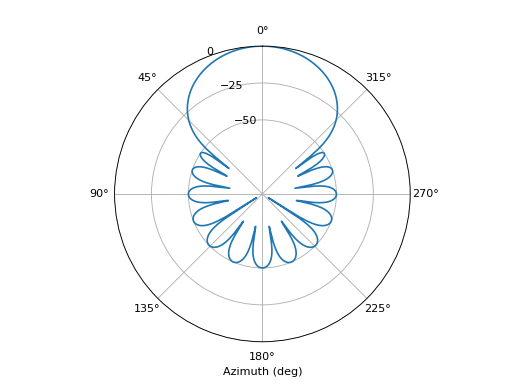
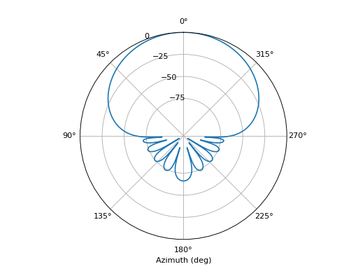
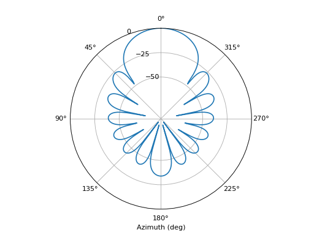

spharpy.beamforming#
Functions:
|
Calculate the weights for a spherical Dolph-Chebyshev beamformer. |
|
Weights that maximize the front-back ratio of the beam pattern. |
|
Normalize the beamforming weights such that the complex amplitude of a plane wave is not distorted. |
|
Weights that maximize the length of the energy vector. |
- spharpy.beamforming.dolph_chebyshev_weights(n_max, design_parameter, design_criterion='sidelobe')[source]#
Calculate the weights for a spherical Dolph-Chebyshev beamformer. The design criterion can either be a desired side-lobe attenuation or a desired main-lobe width. Once one criterion is chosen, the other will become a dependent property which will be chosen accordingly. [1]
- Parameters:
n_max (int) – Spherical harmonic order
design_parameter (float) – This can either be the desired side-lobe attenuation or the width of the main-lobe in radians.
design_criterion ('sidelobe', 'mainlobe') – Whether the design parameter argument is the desired side-lobe attenuation or the desired main-lobe width.
- Returns:
weights – An array containing the weight coefficients.
- Return type:
array-like, float
References
Examples
Apply the weights for a Dolph-Chebyshev beamformer with a side-lobe attenuation of 50 dB to a plane wave decomposition. The direction of arrival is zero degrees azimuth.
>>> import spharpy >>> import pyfar as pf >>> import matplotlib.pyplot as plt >>> import numpy as np >>> N = 7 >>> steering = pf.Coordinates.from_spherical_colatitude( ... np.linspace(0, 2*np.pi, 500), np.ones(500)*np.pi/2, ... np.ones(500)) >>> Y_steering = spharpy.spherical.spherical_harmonic_basis_real( ... N, steering) >>> a_nm = spharpy.spherical.spherical_harmonic_basis_real( ... N, pf.Coordinates(1, 0, 0)) >>> R = 10**(50/20) >>> d_nm = spharpy.beamforming.dolph_chebyshev_weights( ... N, R, design_criterion='sidelobe') >>> beamformer = np.squeeze(Y_steering @ np.diag(d_nm) @ a_nm.T) >>> ax = plt.axes(projection='polar') >>> ax.plot(steering.azimuth, 20*np.log10(np.abs(beamformer))) >>> ax.set_rticks([-50, -25, 0]) >>> ax.set_theta_zero_location('N') >>> ax.set_xlabel('Azimuth (deg)')
(
Source code,png,hires.png,pdf)
{kind=link}
{kind=link}
- spharpy.beamforming.maximum_front_back_ratio_weights(n_max, normalize=True)[source]#
Weights that maximize the front-back ratio of the beam pattern. This is also often referred to as the super-cardioid beam pattern. The weights are calculated from an eigenvalue problem [2]. For high spherical harmonic orders, the eigenvalue problem may not be feasible and a solution will not be found.
- Parameters:
n_max (int) – The spherical harmonic order
normalize (bool) – If True, the weights will be normalized such that the complex amplitude of a plane wave is not distorted.
- Returns:
weights – An array containing the weight coefficients
- Return type:
array-like, float
References
Examples
Apply weights maximizing the front-back ratio to a plane wave decomposition. The direction of arrival is zero degrees azimuth.
>>> import spharpy >>> import pyfar as pf >>> import matplotlib.pyplot as plt >>> import numpy as np >>> N = 5 >>> steering = pf.Coordinates.from_spherical_colatitude( ... np.linspace(0, 2*np.pi, 500), np.ones(500)*np.pi/2, ... np.ones(500)) >>> Y_steering = spharpy.spherical.spherical_harmonic_basis_real( ... N, steering) >>> a_nm = spharpy.spherical.spherical_harmonic_basis_real( ... N, pf.Coordinates(1, 0, 0)) >>> d_nm = spharpy.beamforming.maximum_front_back_ratio_weights(N) >>> beamformer = np.squeeze(Y_steering @ np.diag(d_nm) @ a_nm.T) >>> ax = plt.axes(projection='polar') >>> ax.plot(steering.azimuth, 20*np.log10(np.abs(beamformer))) >>> ax.set_rticks([-75, -50, -25, 0]) >>> ax.set_theta_zero_location('N') >>> ax.set_xlabel('Azimuth (deg)')
(
Source code,png,hires.png,pdf)
{kind=link}
{kind=link}
- spharpy.beamforming.normalize_beamforming_weights(weights, n_max)[source]#
Normalize the beamforming weights such that the complex amplitude of a plane wave is not distorted.
- Parameters:
weights (array-like, float) – An array containing the beamforming weights
n_max (int) – The spherical harmonic order
- Returns:
weights – An array containing the normalized beamforming weights
- Return type:
array-like, float
Examples
Calculate hann window function based tapering weights for a plane wave decomposition beamformer and normalize.
>>> import spharpy >>> from scipy.signal.windows import hann >>> tapering_window = hann(2*(N+1)+1)[N+1:-1], N) >>> h_n = spharpy.beamforming.normalize_beamforming_weights( ... tapering_window, N)
- spharpy.beamforming.rE_max_weights(n_max, normalize=True)[source]#
Weights that maximize the length of the energy vector. This is most often used in Ambisonics decoding. [3]
- Parameters:
n_max (int) – Spherical harmonic order
normalize (bool) – If True, the weights will be normalized such that the complex amplitude of a plane wave is not distorted.
- Returns:
weights – An array containing the weight coefficients.
- Return type:
array-like, float
References
Examples
Apply the max-rE weights to a plane wave decomposition. The direction of arrival is zero degrees azimuth.
>>> import spharpy >>> import pyfar as pf >>> import matplotlib.pyplot as plt >>> import numpy as np >>> N = 7 >>> steering = pf.Coordinates.from_spherical_colatitude( ... np.linspace(0, 2*np.pi, 500), np.ones(500)*np.pi/2, ... np.ones(500)) >>> Y_steering = spharpy.spherical.spherical_harmonic_basis_real( ... N, steering) >>> a_nm = spharpy.spherical.spherical_harmonic_basis_real( ... N, pf.Coordinates(1, 0, 0)) >>> d_nm = spharpy.beamforming.rE_max_weights(N) >>> beamformer = np.squeeze(Y_steering @ np.diag(d_nm) @ a_nm.T) >>> ax = plt.axes(projection='polar') >>> ax.plot(steering.azimuth, 20*np.log10(np.abs(beamformer))) >>> ax.set_rticks([-50, -25, 0]) >>> ax.set_theta_zero_location('N') >>> ax.set_xlabel('Azimuth (deg)')
(
Source code,png,hires.png,pdf)
{kind=link}
{kind=link}